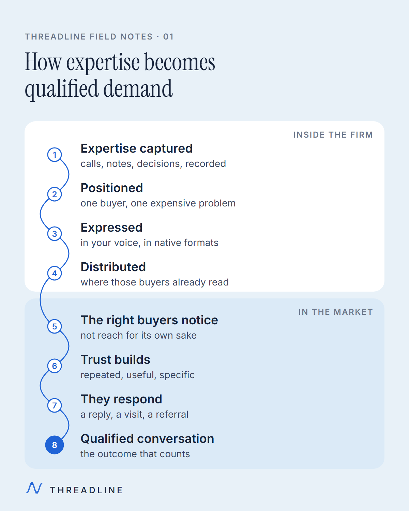
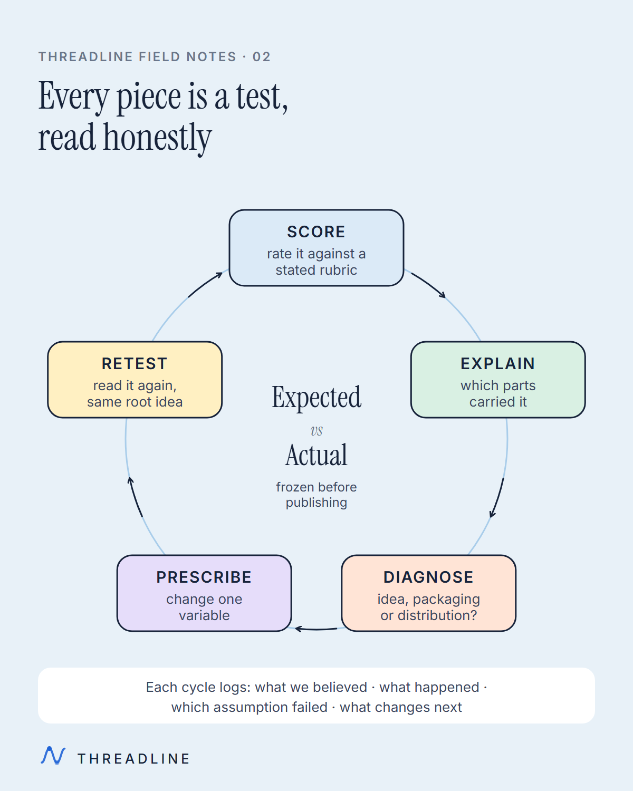
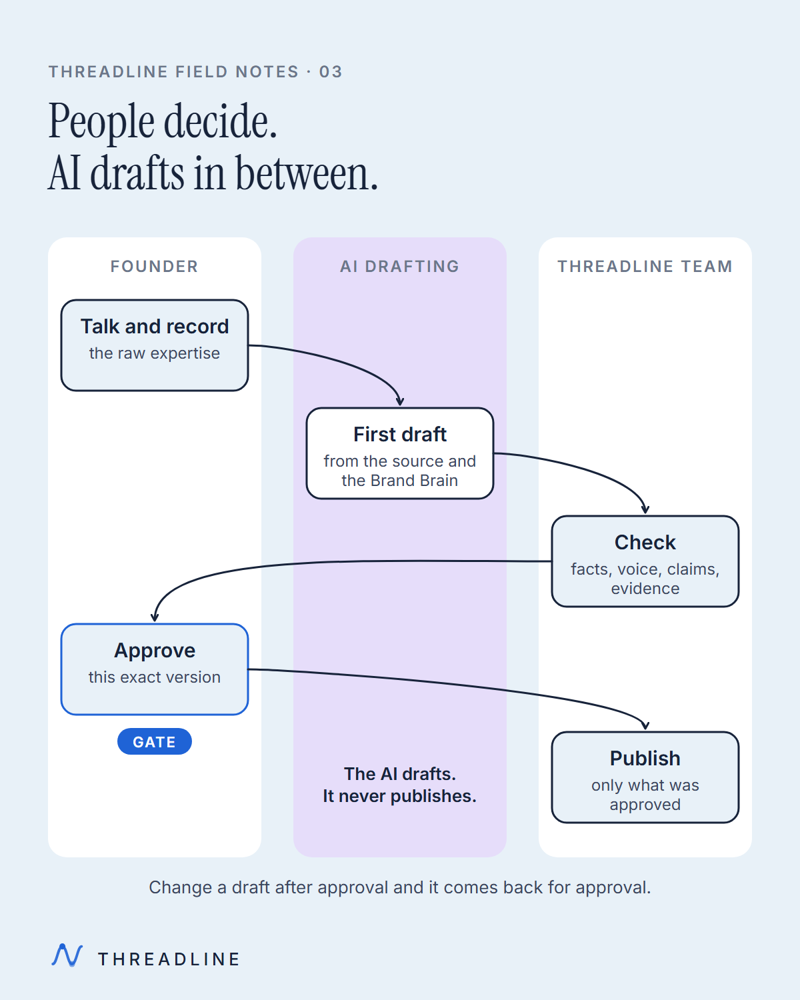
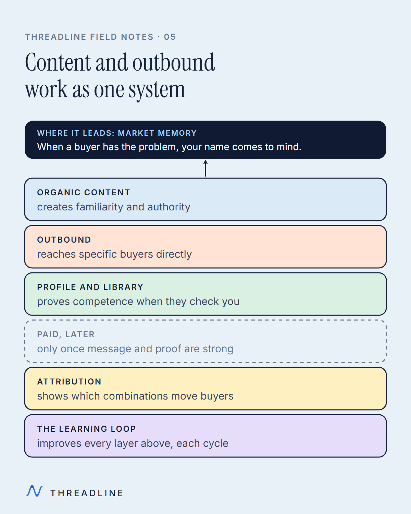
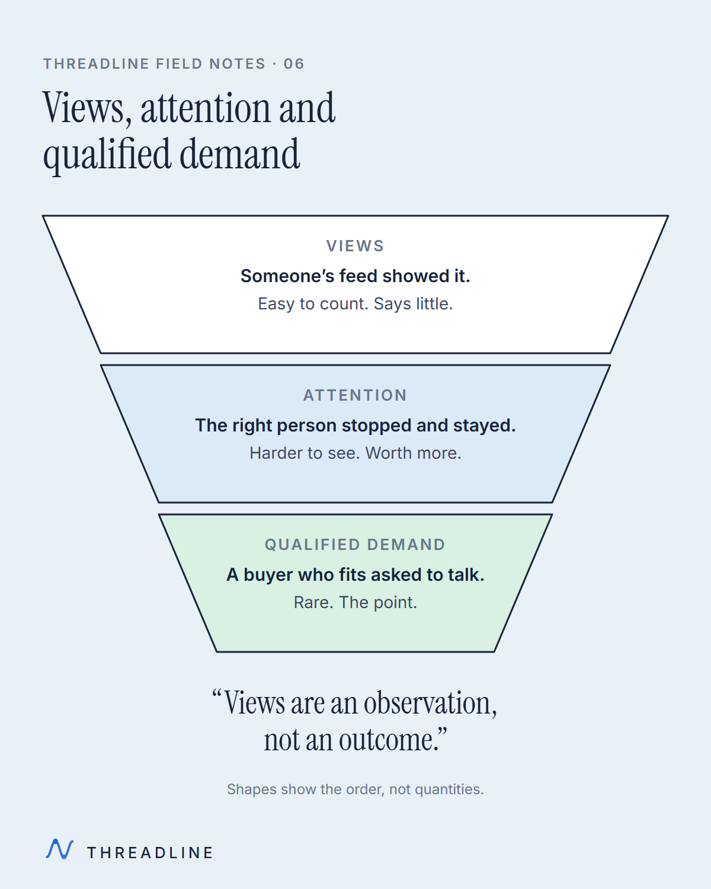
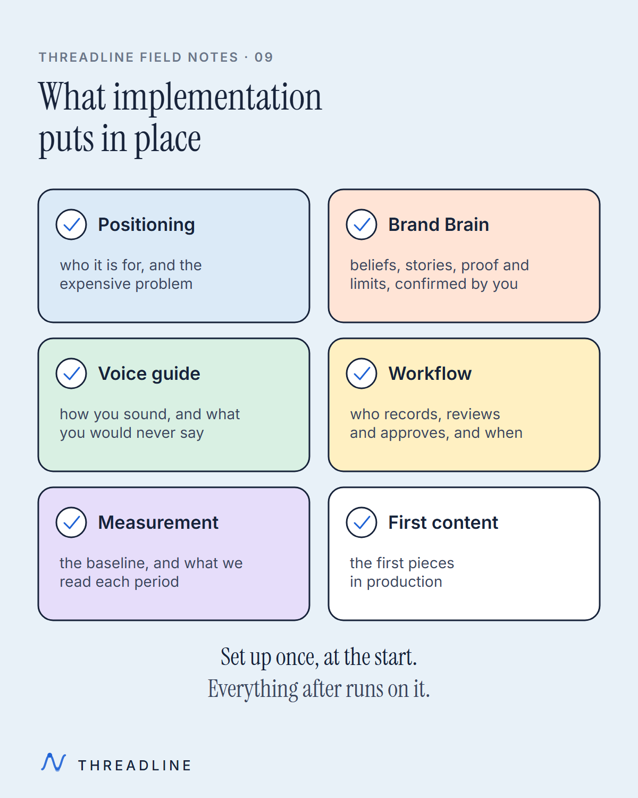
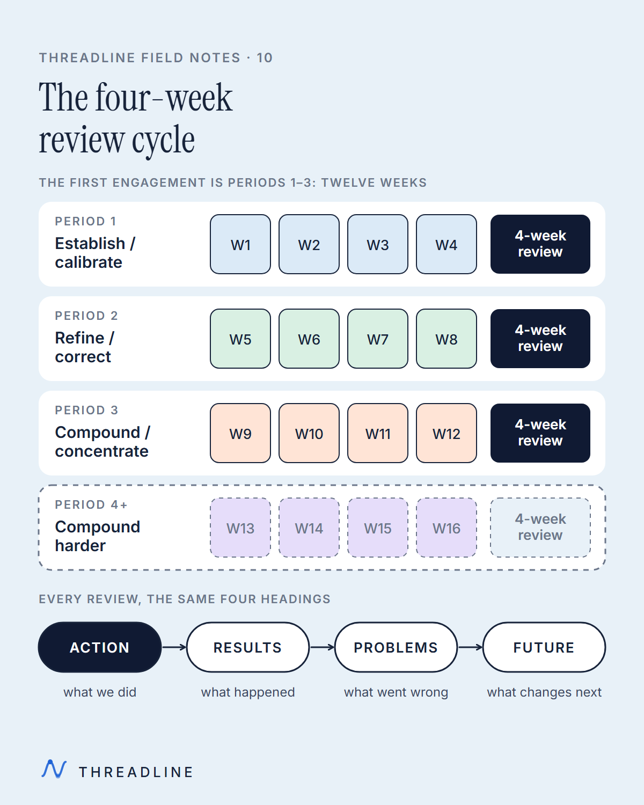
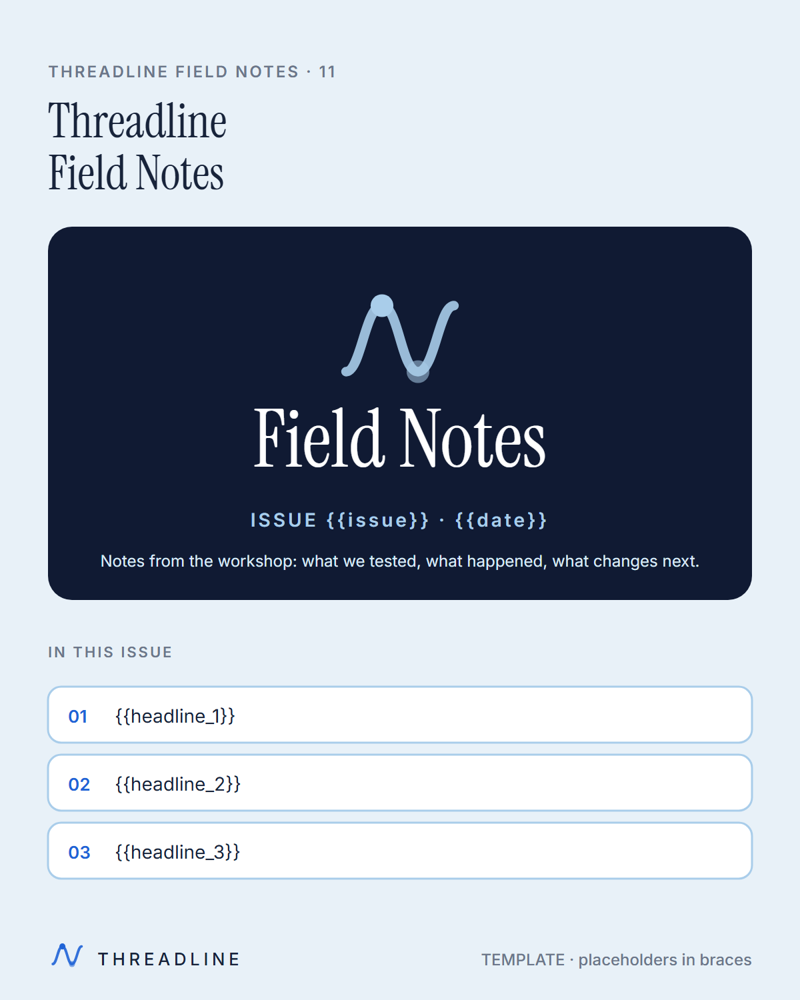
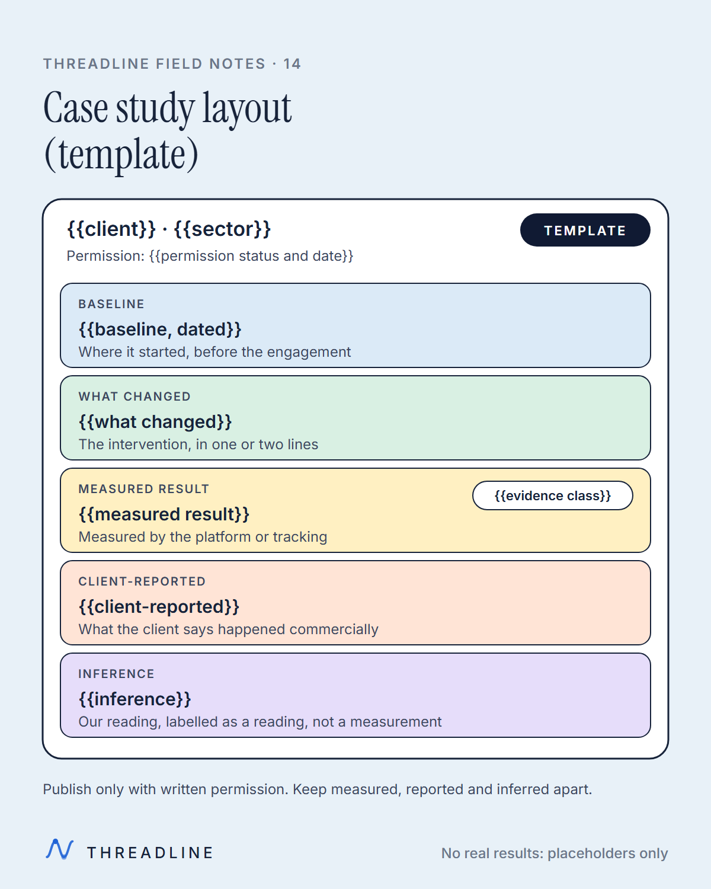

01-expertise-to-qualified-demand-journey
02-diagnosis-improvement-loop
03-human-ai-draft-human-review 04-pesto-content-mix
04-pesto-content-mix
05-content-plus-outbound-system
06-views-attention-qualified-demand 07-one-idea-native-formats
07-one-idea-native-formats![Flow across the top: heard on a call, logged, becomes a piece, seen before the next call. A table of illustrative examples follows. 'We tried content. It got likes, not clients.' is logged as proof and becomes 'Why views mislead, and what to read instead'. 'AI content all sounds the same.' is logged as AI and becomes 'How a human check keeps your voice yours'. 'I don't have time for this.' is logged as time and becomes 'What you actually do: talk, record, approve, sell'. 'Can't we just post more?' is logged as alternatives and becomes 'Why more volume can amplify the wrong thing'.](export/08-sales-objections-to-content-1200.png) 08-sales-objections-to-content
08-sales-objections-to-content
09-what-implementation-establishes
10-four-week-review-cycle
11-newsletter-masthead-template![A diagnostic grid for where content stalls, with four columns: where it stalls, what you see, the likely cause and the first check. Ideas: blank page every week, nothing captured from calls, mine last month's call notes. Scripts: drafts sound generic, voice and claims not written down, check the Brand Brain. Recording: sessions keep slipping, setup friction and no fixed slot, book one recurring slot. Editing: cuts come back wrong, no agreed editing standard, agree examples before cutting. Approvals: pieces wait for sign-off, one approver and no backup, name a backup approver. Publishing: approved but not live, manual posting falls through, schedule when approved. Learning: same result every week, no expected versus actual, freeze a forecast before posting. Find the first stage that stalls and fix that one before adding volume.](export/12-content-bottleneck-diagnostic-1200.png) 12-content-bottleneck-diagnostic
12-content-bottleneck-diagnostic![An evidence ladder from strongest to weakest. Directly tracked: a tracked link or code ties the enquiry to the piece. Buyer named it (buyer-named, client-attributed): the buyer told the client which piece brought them. Multi-touch influenced: several pieces touched the path, none alone. Associated or correlated: moved together in time, cause not shown. Qualitative only: a comment or impression, not counted. Every result carries its class; do not overclaim causality. Organic content is not paid media, so most results sit on the lower rungs.](export/13-attribution-evidence-ladder-1200.png) 13-attribution-evidence-ladder
13-attribution-evidence-ladder
14-case-study-layout-template